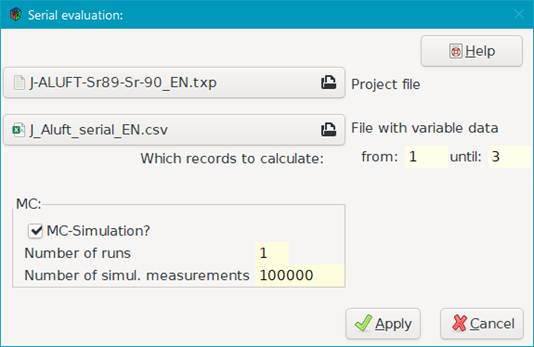

3.6. Serielle Auswertungen eines vorhandenen Projekts¶
Es kann der Bedarf entstehen, ein vorhandenes Projekt in der Weise mehrfach auszuwerten, dass Werte und/oder Unsicherheiten bestimmter Eingangsgrößen geändert werden. Einerseits können diese geänderten Eingangswerte zu verschiedenen Messungen gehören; anderseits möchte man u.U. erkunden, wie sich z. B. Erkennungs- oder Nachweisgrenze in Abhängigkeit der Werte bestimmter Eingangsgrößen ändern. Dieses Verfahren kann unter dem Menü-Punkt „Bearbeiten – Serielle Auswertung” ausgeführt werden.
Die zu ändernden Werte und/oder Unsicherheiten bestimmter Eingangsgrößen werden vom Benutzer in Form einer CSV-Datei zusammengefasst. Ein Beispiel für eine solche Datei:
eps1 |
u(eps1) |
eps4 |
u(eps4) |
|---|---|---|---|
0.338 |
0.045 |
0.390 |
0.055 |
0.36 |
0.045 |
0.370 |
0.049 |
0.35 |
0.047 |
0.360 |
0.052 |
Die erste Zeile enthält die Symbole der betreffenden Eingangsgrößen; darauf folgen Zeilen (=Sets) mit den geänderten Werten. Es können bis zu 60 Symbole/Werte verwendet werden. Die Symbole müssen im Projekt definiert sein. Die erste Zeile ist dabei wie folgt zu interpretieren:
Symbol der zu ändernde Wert der zum Symbol gehörenden Größe wird verwendet
u(Symbol) die zu ändernde Standardunsicherheit wird verwendet
hw(Symbol) die zu ändernde Halbbreite einer rechteckverteilten Größe wird verwendet (aus der intern die Standardunsicherheit ermittelt wird).
Zulässige Symbole sind in dieser Anwendungsform die als unabhängig deklarierten Symbole in der Tabelle „Werte, Unsicherheiten“.
Das obige Beispiel ist als Datei J_Aluft_serial_DE.csv Bestandteil der UncertRadio-Installation; es ist für die Auswertung des Projekts J-ALUFT-Sr89-Sr-90_DE.txp gedacht.
Nach Aktivieren des Menüs „Bearbeiten – Serielle Auswertung“ erscheint der folgende Dialog, mit dem die serielle Auswertung gestartet werden kann:

UncertRadio erzeugt daraufhin eine oder zwei Ausgabedateien mit den Ergebniswerten (ohne oder mit MC-Simulation). Deren Namen werden aus dem Namen der Eingabe-CSV-Datei erzeugt, im obigen Beispiel also
J_Aluft_serial_EN_res.csv
J_Aluft_serial_EN_mc.csv
Diese Dateien enthalten Werte für:
File; #EG; PE; uPE; BE; uBE; LQ; UQ; sLQ; sUQ; DT; DL;
(Projektdateiname, Nr. der Ergebnisgröße, primärer Ergebniswert und Unsicherheit, Bester Schätzwert und Unsicherheit, unteres und oberes Quantil, Quantile mit kürzestem Abstand, Erkennungsgrenze, Nachweisgrenze)